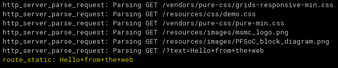
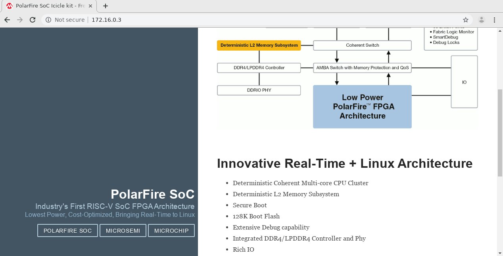

Renode simulation platform¶
Important
This documentation is deprecated and it’s not recommended to be used on new projects.
Visit https://microsemi.com/softconsole instead.
Renode™ is an open-source software development framework with commercial support from Antmicro that lets you develop, debug and test multi-node device systems reliably, scalably and effectively. If all installation dependencies are met (see installation section), then the RISC-V examples can be run in the emulator.
To debug an example in the emulator Renode must be run with the Mi-V model (external tool launcher called Mi-V-Renodeemulation-platform) or PolarFire SoC MPFS (previously known as PSE, see MPFS HAL manual for more details) model and a debug launcher attaches to the running Renode (for example miv-rv32im-systick-blinky Attach-to-Renode). The debug launchers for Renode are almost identical to the launchers for real 32-bit RISC-V hardware targets except:
Disabled/uncheck “Start OpenOCD locally” as Renode debugging does not use OpenOCD/JTAG but connects GDB directly to the Renode GDB Remote Serial Protocol interface.
RISC-V 32-bit targets need the following commands:
Have set the architecture and symbols:
set arch riscv:rv32
Note
Add symbol file command and explain the macro
For PolarFire SoC targets the launcher must be changed (this changed in SoftConsole 6.1).
The Startup -> Run/Restart Commands needs to contain the following code:
monitor $COMMON_PC=`sysbus.e51 PC` monitor runMacro $SetAllPCs monitor start
Change the e51 to u54_1 in the code above if the connection is made to u54_1, change accordingly for u54_2, u54_3, and u54_4.
The SoftConsole v2021.2 platform script needs to be used (it’s not compatible with SoftConsole 6.1). The scripts now start the servers with the auto-start feature disabled (no “true” appended on each line)
e51 StartGdbServer 3333 u54_1 StartGdbServer 3334 u54_2 StartGdbServer 3335 u54_3 StartGdbServer 3336 u54_4 StartGdbServer 3337
Connect to port with the correct hart, check the Port number value:
Hart Port Number e51 3333 u54_1 3334 u54_2 3335 u54_3 3336 u54_4 3337 The very first launcher will configure the platform, PCs and start execution of the code. If a second connection is required to debug another hart, then extra steps need to be followed
Base the second launcher by making a duplicate of the first launcher
In the Debugger tab:
Leave the Start OpenOCD locally unchecked
Select a new port to connect to (3333 to 3337 depending what hart is targeted)
In the Startup tab:
Uncheck Initial Reset
Check Load symbols
Useful Links¶
Windows firewall¶
On Windows if there is a firewall in use then the first time that a debug session is run the firewall may prompt that it is blocking
OpenOCD, fpServer.exe and/or renode.exe. Allow the firewall to unblock these and save this as the default setting if
necessary.
There was an error executing command sysbus.cpu StartGdbServer 3333 true¶
Something is keeping the port 3333 opened, it could be some other application, but in most cases it’s just a previous instance
of the Renode. Close it by pressing X on the window or stop the group launcher which should stop the Renode and the gdb
client as well.
Macros¶
Macros are useful in many scenarios:
When using common and frequently used calls to remove code duplication (maintaining one macro is easier than maintaining all instances where it is used)
When simplifying launchers, it is easier to invoke one macro than few commands
When renaming actions, a command can be encapsulated into a macro in a case the original command is hard to remember.
When a watch command is invoking few commands.
When using ‘monitor’ with longer commands, at the moment the monitor command length is limited and might cause problems when invoking longer commands (they will get truncated and then they will misbehave). Macro can contain long commands and then it can be invoked with a short name.
SoftConsole v2021.2 has bundled a few macros, to get them listed run any PolarFire SoC platform (at the moment no Mi-V macros bundled) and type runMacro in the Renode’s monitor window:
Available macros:
global.BridgeNetworkMac0
global.WiresharkRun
global.MCsrLegend
global.MCsrAll
global.TraceAll
global.LoadSymbols
global.SetAllPCs
To invoke one of these the following syntax must be used:
runMacro $MCsrLegend
or
runMacro $MCsrAll
The MCsrAll macro can be used to troubleshoot trap related CSRs quickly on all harts without a need to use IDE. To see how they are made open the macro file:
<SC_INSTALL_DIR>/renode-microchip-mods/script/macros-pfsoc.resc
Any project including this file inherits the macros and it is possible for users to create their own. When there is a need to trigger a command once per second, for example pressing a GPIO button, then a watch command can be used:
watch "gpio0.button0 PressAndRelease" 1000
This will invoke the gpio0.button0 PressAndRelease command each 1000ms. If a CSRs needs to be fetched and monitored, then the watch command can just invoke a macro which can contain much more involved commands. Combination of nested commands can be sometimes useful as well:
sysbus.u54_1 PC `sysbus.e51 PC`
The sysbus.e51 PC will be evaluated first, which will GET the value of the PC, it acts as GET because no second parameter with the value given after the PC property. Then this value is used as SET for the u54_1’s PC, it acts as SET because after PC property there is a value given (the PC of the e51).
Note
Be aware when tracking MCAUSE and the IRQ is triggered (not a trap exception) that the mcause values can be greater than 0x8000000000000000 on 64-bit platforms and greater than 0x80000000 on 32-bit platforms.
Symbols and simple trace functionality¶
When debugging the debugging-client connects to debugging-server which then talks to the target. With HW targets the GDB-client connects to OpenOCD (which implements and behaves as GDB server) and with FlasPro programmer talks through JTAG with the target.
However, Renode is overlapping slightly with the debugging-client task even when SoftConsole treats Renode only as the GDB server and target.
Typically, the symbol information is used only by the debugger-client, while the debugger-server nor the target do not
need this information. Renode has some debugger-client features, but there is no automated mechanism to transfer
these symbols from within SoftConsole as Renode is treated as regular GDB server (which typically doesn’t need
symbol information). This means that the following commands can’t be automated in a generic manner.
The Renode must be launched, this is demonstrated on mpfs-blinky example, but can be applied to other projects.
Use the mpfs-blinky Renode all-harts Start-platform-and-debug group launcher, wait for it to break on
main and load symbols into Renode by typing the following into Renode’s monitor window:
sysbus LoadSymbolsFrom @../../extras/workspace.examples/mpfs-blinky/Debug/mpfsblinky.elf
The path to the symbols is referenced relative to Renode’s binary and needs to contain correct path to workspace, correct project, correct configuration (Debug/Release) and then correct binary name. Problem is that this is not generic and even when using macros, the path could be different depending on what workspace or what project name user’s use. For PolarFireSoC users there is LoadSymbols macro, but requires users to set the SYMBOLS variable:
set SYMBOLS @../../extras/workspace.examples/mpfs-blinky/Debug/mpfs-blinky.elf
runMacro $LoadSymbols
These might be added to the debug launcher in some cases (with monitor prefix), but it’s not a reliable way to load the symbols as the path might change and because monitor command has string length limitation (see section Macros ). Now the runMacro $McsrAll can resolve symbols and can tell the user where the PC of each hart is and what it’s symbol. This can be used to resolve to what symbol some memory locations belong, for example (use backtick symbol):
sysbus FindSymbolAt `sysbus.u54_1 PC`
sysbus FindSymbolAt `sysbus.e51 MEPC`
The MEPC on target’s boot-up is not populated and therefore not resolved, but when it is invoked later (when the emulation was started) it should get populated on the first interrupt or the first trap exception and then the resolution should work, this should be useful when troubleshooting traps as it can tell the user where the application had trap without a need to open the listing/assembly file and searching for the MEPC’s value. See the section about trap exceptions:
It is possible to resolve all the PCs to symbols as the application runs. To enable it on e51 CPU, use the following command:
sysbus.e51 LogFunctionNames true
The LogLevel on the platform might be set to ‘error’ only and this is an ‘info’ level, therefore execute:
logLevel 1 sysbus.e51
On PolarFireSoC targets, there is ‘TraceAll’ macro which enables this trace feature on all CPUs, or ‘TraceE51’ macro if just E51 trace is needed (macros for all other harts exist as well). However, enabling too much of debug/trace information might cause unnecessary verbosity and make the debugging harder, therefore it’s good to enable as little as needed.
Now running the mpfs-blinky application by:
pressing
Resumeicon button in the main toolbarF8key shortcut
And it should start outputting simplified trace information. The SoftConsole’s Console tab should show when and what parts of the code was the CPU executing:
17:14:04.7767 [INFO] e51: Entering function MSS_UART_polled_tx_string at 0x80024D8
17:14:04.7767 [INFO] e51: Entering function gpio0_bit0_or_gpio2_bit13_plic_0_IRQHandler at 0x8003A1A
17:14:15.9247 [INFO] e51: Entering function gpio0_bit0_or_gpio2_bit13_plic_0_IRQHandler at 0x8003A1A
17:14:15.9378 [INFO] e51: Entering function gpio0_bit0_or_gpio2_bit13_plic_0_IRQHandler at 0x8003A1C
17:14:15.9488 [INFO] e51: Entering function gpio0_bit0_or_gpio2_bit13_plic_0_IRQHandler at 0x8003A1E
17:14:15.9603 [INFO] e51: Entering function gpio0_bit0_or_gpio2_bit13_plic_0_IRQHandler at 0x8003A22
17:14:15.9749 [INFO] e51: Entering function MSS_GPIO_set_output (entry) at 0x80032FE
17:14:15.9749 [INFO] e51: Entering function gpio_number_validate (entry) at 0x80034B8
17:14:15.9749 [INFO] e51: Entering function gpio_number_validate at 0x80034D4
17:14:15.9749 [INFO] e51: Entering function gpio_number_validate at 0x80034F6
17:14:15.9749 [INFO] e51: Entering function gpio_number_validate at 0x800350E
17:14:15.9749 [INFO] e51: Entering function gpio_number_validate at 0x8003524
17:14:15.9749 [INFO] e51: Entering function gpio_number_validate at 0x8003530
17:14:15.9749 [INFO] e51: Entering function gpio_number_validate at 0x8003552
17:14:15.9749 [INFO] e51: Entering function MSS_GPIO_set_output at 0x8003326
17:14:15.9749 [INFO] e51: Entering function MSS_GPIO_set_output at 0x800332A
17:14:15.9749 [INFO] e51: Entering function MSS_GPIO_set_output at 0x8003334
17:14:15.9749 [INFO] e51: Entering function MSS_GPIO_set_output at 0x8003362
17:14:15.9749 [INFO] e51: Entering function gpio0_bit0_or_gpio2_bit13_plic_0_IRQHandler at 0x8003A26
With the current release there is no way to use this data in a more visualized manner, but even in the text-form it can be extremely useful. Sometimes it’s useful to build watch commands, for example to see what symbol the MEPC is when the IRQ/trap happened. It’s good to start building the commands in steps, first fetch the value of MEPC:
sysbus.e51 MEPC
Then resolving this address into a symbol (warping it with backtick character):
sysbus FindSymbolAt `sysbus.e51 MEPC`
And as last wrapping it into the watch command:
watch "sysbus FindSymbolAt `sysbus.e51 MEPC`" 200
This should keep updating the symbol where MEPC is pointing 5 times per second until Ctrl+C is pressed. If nothing is
displayed then Resume the application in the SoftConsole and trigger an IRQ by typing in Renode’s monitor:
gpio0.button0 PressAndRelease
Note
The user can make their own macros for Mi-V targets and use this feature however there are no macros bundled. Or use the commands directly without encapsulating them into macros.
Creating bridge/tunnel to the emulation¶
The following section will cover necessary steps to access the emulated network from within host OS, however in SoftConsole v2021.1 this feature is accessible only from Linux hosts.
Currently the mpfs-freertos-lwip example is only SoftConsole’s example where this feature can be demonstrated. To access the emulated network the following macro must be added (there might be already preexisting monitor commands) to the debug launcher’s (in this case mpfs-freertos-lwip Renode all-harts Debug) section
![digraph {
graph [rankdir="LR", ranksep=.01, bgcolor=transparent];
node [fontname="Verdana", fontsize="9", shape="rectangle", width=.1, height=.2, margin=".04,.01", style=filled, fillcolor=white];
edge [arrowsize=.7];
"Debug Configuration" -> "Startup" -> "Initialization"
}](../_images/graphviz-3d8f813631328d0da6dbeedbd4eed892947094b6.png)
monitor runMacro $BridgeNetworkMac0
The bridge is sensitive if it was invoked before or after the emulation started and therefore keeping it in section
will be the most reliable way to use it:

When creating the bridge for the first time it might display error:
Could not set TUNSETIFF, error: 2
Renode is trying to probe user’s privileges, which should be safe to ignore. If the polkit and sudo are set to be passwordless, then the bridge should be created correctly without any other user’s interaction. See the chapter:
Could not set TUNSETIFF, error: 2
Then as superuser (root user, or regular user with sudo privileges) invoke on a Linux terminal:
ifconfig renode-tap0 172.16.0.1/24 up
For best experience copy/paste this command from the example’s UART output as it is updated dynamically depending on how the network is set up, while the command above only covers the default settings.
Make sure that the renode-tap0 network is not overlapping with any other network on the user’s host. Including the virtual networks and bridges like docker’s network. When targeting real HW it is desired to make it part of an existing network (overlap with existing networks) and just keeping the IP unique (do not create conflicts on the network).
However, for the way how Renode is making the tunnel it is best to have completely unique and separate networks
while the host’s IP will be the targets gateway. If this is not satisfactory and overlapping is required then to make it work
might require other extra steps which are not covered in this document (setting up routes, gateway, firewall, software
bridge …)
By default, the target’s IP address and mask are 172.16.0.3 / 255.255.255.0
These settings can be change from within this file:
/src/modules/config/lwip-2.0.0-wip/network_interface_settings.h
Now running ping 172.16.0.3 should start responding, however this might not be true for other applications, as
they might have ICMP or even ARP disabled (see all troubleshooting sections related to networking). If ping support
is undesired then it can be disabled easily from:
/src/modules/config/lwip-2.0.0-wip/lwipopts.h
By changing LWIP_ICMP define value the ping can be disabled, other networking features and debugging verbosity can be tweaked from this file as well. The emulation is not as fast as the real hardware therefore the ping response times might vary:
# ping 172.16.0.3
PING 172.16.0.3 (172.16.0.3) 56(84) bytes of data.
64 bytes from 172.16.0.3: icmp_seq=1 ttl=255 time=202 ms
64 bytes from 172.16.0.3: icmp_seq=2 ttl=255 time=3.13 ms
64 bytes from 172.16.0.3: icmp_seq=3 ttl=255 time=2.43 ms
64 bytes from 172.16.0.3: icmp_seq=4 ttl=255 time=4.74 ms
^C
--- 172.16.0.3 ping statistics ---
4 packets transmitted, 4 received, 0% packet loss, time 3004ms
rtt min/avg/max/mdev = 2.432/53.206/202.517/86.208 ms
The first ping might be extra long as other tasks had to be finished first (such as ARP address exchange) Then with a generic webserver browser opening the location: http://172.16.0.3
Should open the demo website running from within target. Scrolling down to the page to the section Send text to UART, entering text into the HTML form and pressing Send button:
Then the firmware should get the text displayed within the UART’s output:

Feel free to experiment with the current example but note that currently bundled HAL is not most up-to-date with the recent HAL release, the GEM driver required few changes to be made on top of HAL so it is not straight forward to port to the newest HAL. This will be addressed in a forthcoming release, however in the meantime use the bundled mpfsblinky, mpfs-mustein-julia or firmware catalog examples which use the most recent HAL.
Related sections: Using Wireshark to monitor the network traffic inside the Web content of the mpfs-freertos-lwip example How do I delete Renode’s bridge TAP networking interface? Can’t see the interface after invoking BridgeNetworkMac0 macro Wireshark shows a significant amount of traffic and overloads my target
Using Wireshark to monitor the network traffic inside the emulation¶
In SoftConsole v2021.2 release this feature is accessible only from Linux hosts. The following steps are mainly covered from Ubuntu perspective, for other distributions contact your system administrator or execute the equivalent steps for your distribution yourself.
To startup Wireshark with each debug session open the mpfs-freertos-lwip example, edit the mpfs-freertos-lwip Renode all-harts Debug launcher and in the Initialization Commands text-box area:
Append the following command
monitor runMacro $WiresharkRun
Launching the group launcher now should open Wireshark windows. If this is not happening, try to invoke runMacro $WiresharkRun command from within Renode’s monitor window. If Renode prints error “Wireshark is not installed or is not available in the default path”, if the Wireshark is installed by the package manager (and not built from source) then it should be in the path already. Double-check if Wireshark is installed on the system and where it is by typing on the Linux console terminal:
whereis wireshark
If Wireshark is found but it’s not in the path, then add it to the path temporary with:
export PATH=<WIRESHARK_PATH>:$PATH
And then start SoftConsole from the same terminal. If it’s not installed, then type the following to install it:
sudo apt-get install wireshark
Answer YES, if user will be asked if Should non-superusers be able to capture packets?.
If this dialog was not shown it’s possible that the package already was installed once and configured and then uninstalled. Proceed to completely remove the package with its settings. The ‘remove’ option only removes the application and leaves configurations files untouched, while the ‘purge’ option removes configuration as well. Invoke the following command:
sudo apt-get purge wireshark
After a complete removal, proceed to install it back again, now the dialog question should be displayed. If Wireshark now when launching the launcher opens but displays popup error
Couldn’t run /usr/bin/dumpcap in child process: Permission denied
Then verify the file privileges:
ls -la /usr/bin/dumpcap
If it is accessible to root user and Wireshark group, then most likely the current user is not added inside the Wireshark group. The following command should add user to Wireshark group:
sudo usermod -a -G wireshark <YOUR_USER>
For the group changes to take effect typically logging out and logging back to the user’s account should be enough, however sometimes reboot is necessary.
If everything is configured properly now the Wireshark should work and run automatically on each launch. The
Wireshark is sensitive if it was invoked before or after the emulation started and therefore keeping it in section Initialization will be most reliable.
As mention in other sections, the emulation is not running at full speed of real hardware and under heavy load, some packets might be dropped/timeout. Depending on the application/protocols (and firmware’s IP stack) the packets might get retransmitted transparently
Emulation time¶
The host’s real time and the emulation time might not be passing at the same speed, read more about it in the “Time framework” chapter of Renode’s documentation.
How many instructions per second can be emulated depends on the host’s performance, OS, target application and the settings. The emulation time speed is mostly depending on the performance of the host and the guest’s MIPS rating. There are other factors such as the amount of the cores the emulated platform has. A very significant factor is how the application is written and how much time cores spend in sleep or are halted (See chapter Tweaking the emulation performance). In a case where emulator can spend most of the time in sleep will not require as many instructions to emulate for given time to pass, it’s easier to wait for the next interrupt instead of looping inside an infinite loop. The RISC-V CPUs (32-bit and 64-bit) have default 64MIPS rating, if required this can be changed from Renode’s platform script or SoftConsole debug launcher (in launcher scrip the commands need monitor prefix).
See:
To set 20MIPS rating on PFSoC’s CPUs add the following to your platform script:
sysbus.e51 PerformanceInMips 20
sysbus.u54_1 PerformanceInMips 20
sysbus.u54_2 PerformanceInMips 20
sysbus.u54_3 PerformanceInMips 20
sysbus.u54_4 PerformanceInMips 20
Note: If editing the <SOFTCONSOLE_DIR>/renode-microchip-mods/scripts/polarfire-soc-multiple-servers.resc file then be aware these changes will be applied on all projects which are using this platform and in general is not recommended. Recommended way is to change platform script files when the project has its own dedicated platform script file. It is possible to copy existing scripts, or even include existing platforms and only do changes on top of the included generic platform (see files in the /renode-microchip-mods/scripts/). When adjusting settings for a single project while using existing bundled platform, then changing the debug launcher is the preferred method (commands need monitor prefix).
If a higher MIPS rating is given to the platform than the host can handle in real-time will cause the emulation time to pass at slower rate than the time is passing on the host.
To check what MIPS settings are se to e51 CPU (e51 is used just as example):
sysbus.e51 PerformanceInMips
To check how much instructions e51 are executed:
sysbus.e51 ExecutedInstructions
Note
This value might be misleading, preferable is to have as many MIPS executed as possible but wasting these MIPS on infinite loops is not a gaining any performance and on contrary might cause the virtual time to pass at slower rate. Spending as much time as possible in the sleep will enable the emulator to be more efficient and emulate more of the emulation time than it would be able to when all harts would be too busy cycling in infinite loops. Therefore, sometimes a lower ExecutedInstructions can achieve better performance. Having a host capable to handle as many MIPS as possible is good, but as important is to not waste these MIPS emulating unnecessary and wasteful instructions.
To see how much of emulation time passed:
machine ElapsedVirtualTime
To check every second how much of the emulation passed:
watch "machine ElapsedVirtualTime" 1000
Note
If any of these needs to be part of a debug launcher then be aware of the monitor command string length limitation. If there is need to invoke longer commands from the launcher then using variables and making custom macros could be a workaround. See section:
Tweaking the emulation performance¶
If emulating multi-node (multi-board) platform then the time ratio between the nodes will not be affected. When there are server and client set up in the platform and a network request with a 1second timeout is sent. Then the timeout in the emulation will be timed as expected no matter if that took on the host 5seconds or 0.5 seconds to emulate it.
If there is the need to run real-time communication with host’s network then some tweaks to the platform and application need to be made. When overloading the slower emulated target with many requests then the target might not be able to respond within the required time, however few steps could improve this situation:
Tweaking the emulation performance
If emulating multi-node (multi-board) platform then the time ratio between the nodes will not be affected. When there are server and client set up in the platform and a network request with a 1second timeout is sent. Then the timeout in the emulation will be timed as expected no matter if that took on the host 5seconds or 0.5 seconds to emulate it.
If there is the need to run real-time communication with host’s network then some tweaks to the platform and application need to be made. When overloading the slower emulated target with many requests then the target might not be able to respond within the required time, however few steps could improve this situation:
Do not send unnecessary traffic, monitor with wireshark and remove sources of any traffic which is undesired
If latencies are not critical then do not pool peripherals constantly in a loop, give it a delay or put the core into the sleep (if there will be timer interrupt happening soon).
If using custom models, do refactor them and apply good coding guidelines to make them more efficient. For example, do not use many “if” conditions on register reads/writes, instead use the DoubleWordRegisterCollection lookup table.
Spend as much time as possible in a wait-for-irq state, put CPU into with WFI instruction, use inline assembly:
__asm("wfi");
Completely halt unneeded harts (revise the HAL’s constrains of this approach mentioned in sections above). They can be halted from within the platform as done in the pse-mustein-julia demo (as the demo has its own customized platform bundled with the project):
sysbus.u54_4 IsHalted true
Or they can be halted from the debug launcher as done in the pse-blinky or pse-freertos-lwip:
monitor sysbus.u54_4 IsHalted true
Optimize the firmware itself. When targeting 64-bit systems there are common mistakes which developers are more likely to introduce to their code. One of which is not using native size of the platform. Using 32-bit loop counter still can occupy whole 64-bit register but it will do extra instructions to make it behave as 32-bit register. While using 64-bit integer on a 64-bit will translate directly and natively to a single register without any unnecessary instructions. Use static code analysis tools and refactor problematic code sections.
For example, by default the FreeRTOS idle task is just a infinite loop, but there is a way to implement own idle task: https://www.freertos.org/RTOS-idle-task.html
Set config USE_IDLE_HOOK to 1 in FreeRTOSConfig.h and implement sleep in the idle hook:
void vApplicationIdleHook( void )
{
__asm("wfi");
}
This change can show even 20-fold difference between the FreeRTOS with sleep and without sleep. Meaning that fewer instructions were needed to be emulated for the same time on the guess to pass.
Web content of the pse-freertos-lwip example¶
This bundled example is showcasing how to implement a FreeRTOS with a LwIP networking stack running a webserver on the PolarFireSoC Icicle kit emulation platform. This is just an example, has only minimal implementation of a webserver and shouldn’t be used for production code.
Previous sections covered how to bridge the network and interact with the target, when these steps are executed correctly on the Linux host, then the webserver should be accessible from a generic web-browser:

When changing content of the webserver the routes need to be bonded to the new page callback handlers, see:
/src/application/web-server/routes.h
The callbacks (route handlers) themselves are typically stored in:
/src/application/web-server/route_handlers.c
To respond differently depending on the URL’s query, a http_request_get_query_value(req, "query_key") call can be used and in this example it is used to send messages to UART (see route_static function).
Callbacks can produce the response directly, use simple string replacement template engine (see: route_template_index function) or read the content from the embedded payload (see: route_static function).
To change the embedded payload data these three steps must be followed:
Edit the content in the
/src/application/embedded_autogenerated_data/data_root_rawfolder only (all other files in the/src/application/embedded_autogenerated_dataare autogenerated)Run the
pse-freertos-lwip Embed-the-web-contentexternal launcher to generate thehexdumpsand metadata required for the payload to be bundled. The tool can be used from Windows/Linux command line, can be part of Continuous Integration or be part of a Makefile projects.Rebuild the project (partial/incremental build should be sufficient)
The external launcher will compress html/htm/js/css/xml/json/wasm files and they can’t be used directly without decompression, this example webserver is only capable of passing through the compressed data. However the GZIP compression is used and virtually all browser from the past decade support transparent decompression feature (https://webmasters.stackexchange.com/questions/22217 and https://en.wikipedia.org/wiki/HTTP_compression). On embedded targets with restrained storage capacities it is useful feature as it can reduce the static content size to 10-20% of its original size. Just remove the -compress_web=true argument from the external launcher in cases where this feature needs to be disabled. The route_template_index function uses .tpl file extension postfix to avoid compression on that single specific file only. For more information and argument options see:
<SOFTCONSOLE_DIR>/extras/ead/README.pdf